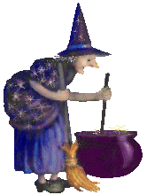
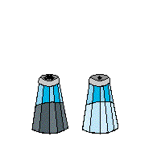
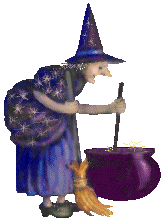
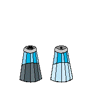

Everyone votes for their favorite. Celebrity judges give out select awards. The winner receives The Guacamole Glory Trophy and bragging rights until summer, the title of official
Guacamole of San Francisco,
and a secret mystery prize!
The top voted chef receives The Guacamole Glory Trophy and bragging rights until summer. The title of official
Guacamole of San Francisco,
a secret mystery prize! And maybe you even end up on KRON 4.
The Farmhouse Mansion
The Mission, San Francisco